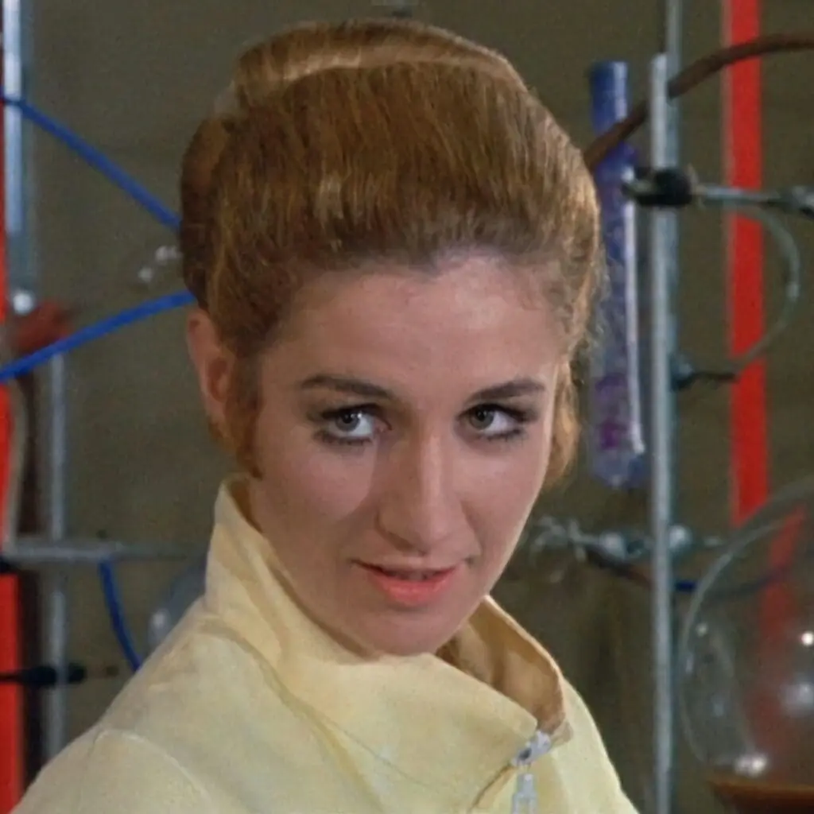

Introduction
Doctor Who is a TV show from the UK. It was initially televised between 1963 and 1989. During that time, deuteragonists and antagonists changed frequently but the main character remained, despite changes in appearance and demeanor, a constant presence. I hypothesize that changes in casting and frequency of interactions sometimes reflected social attitudes in the real world. These visualizations represent a first step toward the generation of a more substantial project with more data drawn from resources outside of what I've generated.
(For instance, Dr. Elizabeth Shaw, a deuteragonist on the show in the early 1970s with multiple PhDs in various STEM subjects (pictured at left), was only featured for one season. Caroline John — the actress who played Dr. Shaw — had her own reasons to leave the show after one season but was informed that she was not going to be asked back in any case because Dr. Shaw was too intelligent to be the Doctor's companion any longer. Because she isn't featured in many episodes and misogynist attitudes likely reduced her screen time, I bet Dr. Shaw is "less important" in social networks than women whose intelligence is more starkly contrasted with the Doctor's on the show. But you'll have to stay tuned to find that out — I don't have all the data I need to draw large-scale conclusions about Dr. Shaw yet.)
Target Books transformed many Doctor Who episodes into books. Although these novelizations were published later, I wanted to find a way to speedily extract information about who is interacting with whom in Doctor Who stories. I've developed detailed protocols for coding interactions in television stories and novelizations. While manually coding interactions in TV stories takes approximately one and a half hours per 25-minute episode, extracting interactions from books takes between 30 minutes and an hour — and one book is the equivalent of between two and ten TV episodes. Therefore, I decided to extract interaction data from Doctor Who novelizations as a proxy for interaction data from the show.